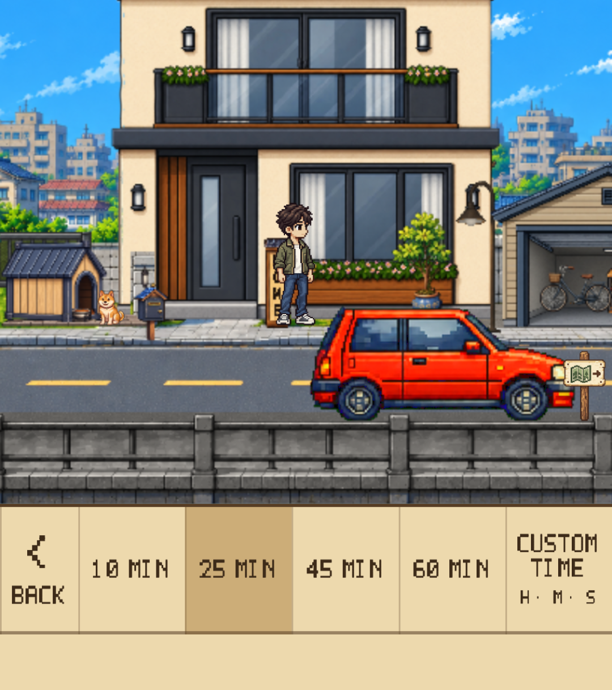
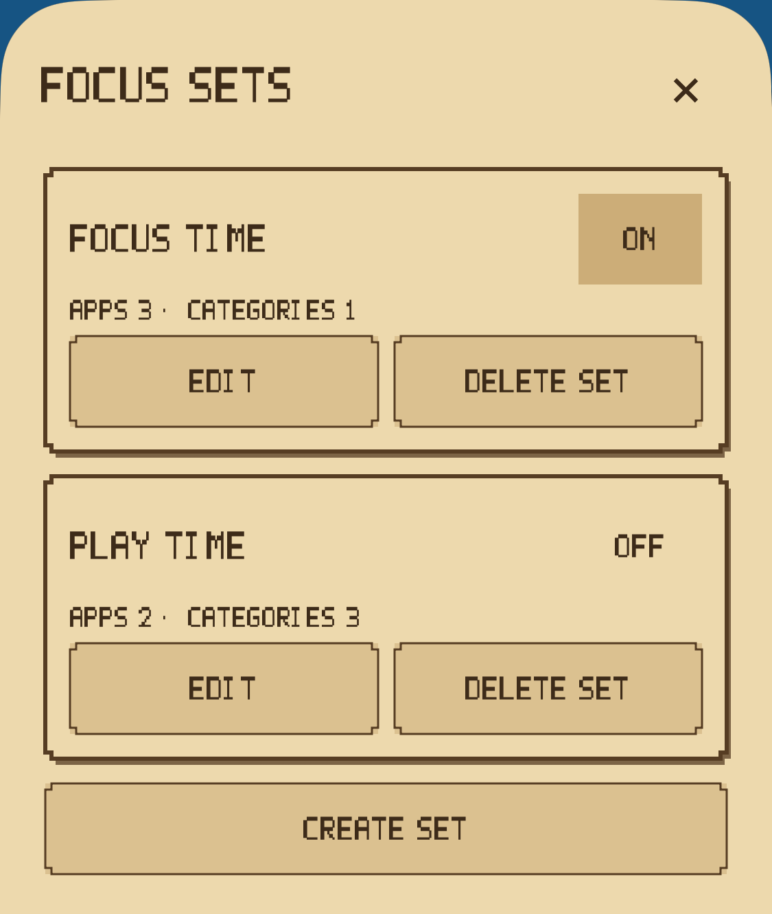
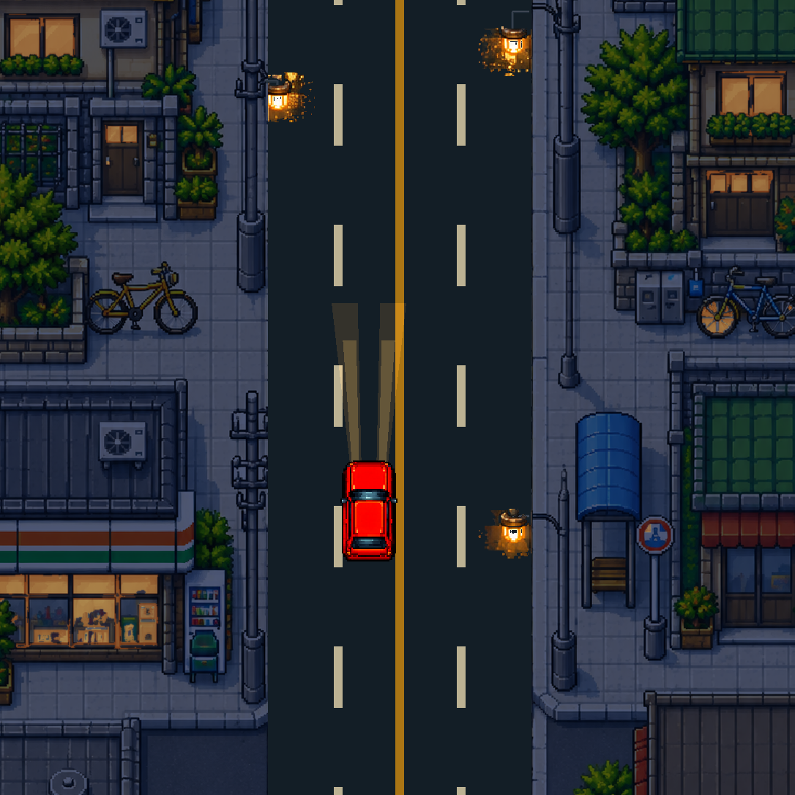
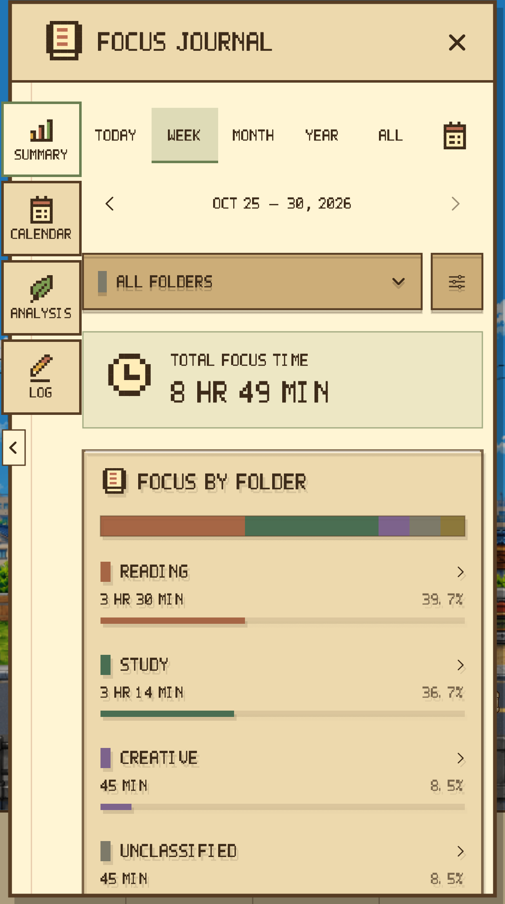
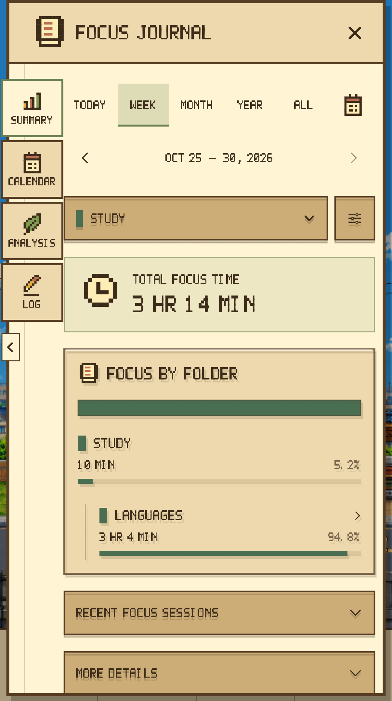
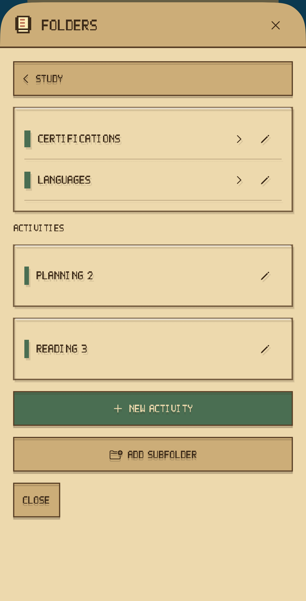
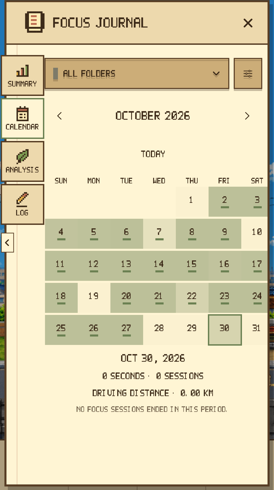
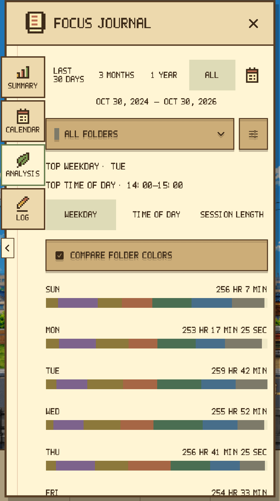
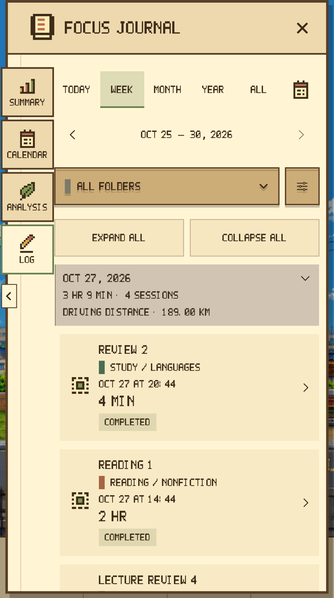

Make room for today's focus
Choose a preset or set your own time, then pick an activity. Pause when you need to and resume when you are ready.
A focus timer that keeps your progress and grows your world
Start the timer. Take a little journey.
Your focus stays with you in your journal,
and brings your own Home to life.
The time you give to your work becomes a record, then a world you can see growing. A little reason to come back and focus again.
01 / FOCUS & DRIVE
Study, read, or work. Set a focus time and watch your car travel through a pixel city. Let the scenery pass while you stay with the task at hand.
Choose a preset or set your own time, then pick an activity. Pause when you need to and resume when you are ready.
Focus Lock blocks the apps and categories you choose. Check the remaining time with a Live Activity on your Lock Screen, and get a notification when you finish.
Automatic driving or manual controls. Top View or Side View. Day or evening, clear skies or rain. Choose your driving speed, too.

View larger
View larger
View larger02 / FOCUS JOURNAL
Focus Journal is a place to look back. Organize study and work into folders, and find the rhythm that works for you. Unlock the mailbox at Home stage 1 to open Focus Journal.

View largerFOCUS JOURNAL / 01
Look back by day, week, month, year, all time, or a custom range. Open recent sessions and detailed stats when you want a closer look.
Actual app screens · Records shown are sample data for this shoot.

View largerFOCUS JOURNAL / 02
Study, work, personal projects. Compare time across folders and subfolders, then select a folder to explore the records behind it.
Actual app screens · Records shown are sample data for this shoot.

View largerFOCUS JOURNAL / 03
Save activities you return to, then find them in Recent or Favorites. Keep them in folders and subfolders so starting your next session feels easy.
Actual app screens · Records shown are sample data for this shoot.

View largerFOCUS JOURNAL / 04
See when you focused and for how long. Choose a date to revisit that day's sessions, and keep building your own routine.
Actual app screens · Records shown are sample data for this shoot.

View largerFOCUS JOURNAL / 05
Explore focus trends and completions. Compare weekdays, times of day, and session lengths for a little insight into your next session.
Actual app screens · Records shown are sample data for this shoot.

View largerFOCUS JOURNAL / 06
Find sessions by period and folder, then open the details. Edit an activity name or folder to keep your history easy to revisit.
Actual app screens · Records shown are sample data for this shoot.
03 / MAKE IT YOUR HOME
From a small beginning to a place you want to return to. Across Home stages 0–35, each focus session leaves a little something in your world.


25 cumulative focus minutes → 1 Stamp → Spend Stamps to grow HomeSave the Stamps needed for each stage, then spend them to unlock it yourself. Earning Stamps does not unlock stages automatically. Free Drive does not earn focus rewards.
Completing stage 35 of the current Japan Home resets that region's remaining Stamps and time carried toward the next Stamp to 0, and ends further Stamp awards. Focus time, session records, and badges continue to accumulate.
Growth opens up little choices. Add your own touch to your avatar, car, and nameplate.
Choose your avatar's gender, skin tone, hair, and outfit.
Choose a red or white car for your Home and drives.
Put your own name on your Home.
04 / A MOMENT TO UNWIND
When you arrive at the café, turn on the rest timer and take a moment to unwind. Adjust the original music, ambient sounds, and little sound effects to your taste, and enjoy a leisurely break.

05 / YOUR TIME, KEPT CLOSE
Sync your focus records and Home progress through your personal iCloud.
Export a backup file and import it later. Restoring purchases and restoring records are separate steps.
Continue your journey in English, Korean, or Japanese.
06 / FREE TO WANDER
Free Drive
Free Drive lets you enjoy the scenery with no time limit.
Focus Drive Pass
Try Focus Drive in the Japan region for 75 cumulative minutes of actual focus time. Then continue with a one-time purchase of the Focus Drive Pass.
The current Focus Drive Pass applies to Focus Drive in Japan. Additional regions are not currently available and may require a separate purchase if released.
DAYROAD / APP PREVIEW
Get a feel for Dayroad through actual app footage. You can turn the sound on after playback starts.
25 SEC / EN
07 / BEFORE YOU GO
The current App Store compatibility listing supports iPhone with iOS 17.0 or later. App languages are English, Korean, and Japanese. Check the App Store for the latest installation requirements.
No. The Focus Drive Pass is a one-time purchase you choose to make. There is no subscription, automatic renewal, or automatic charge after the trial. Free Drive stays free.
Earn one Stamp for every 25 cumulative minutes of actual focus time. Spend the required Stamps to grow Home: cars unlock at stage 2, avatar customization at stage 3, and the nameplate at stage 5. Free Drive does not earn focus rewards. Meet your dog at Home stage 6. The Travel Atlas shows the current Japan region and your Home growth journey.
Restore the pass with the Apple Account used to buy it. Restore records, Stamps, and Home separately through personal iCloud sync or a JSON backup. Back up your existing records before switching devices.
Available on the App Store
Keep a record. Grow a world worth coming back to.
iPhone · iOS 17 or later